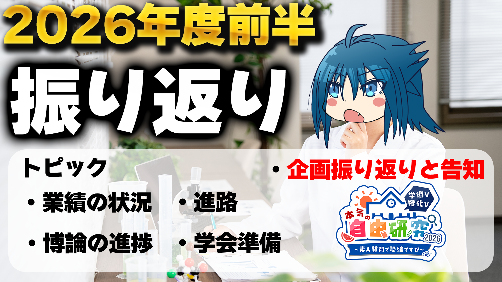
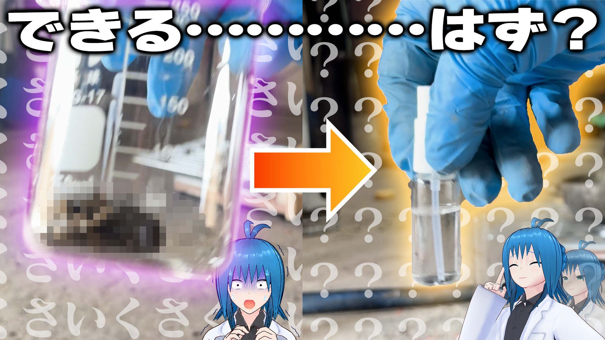
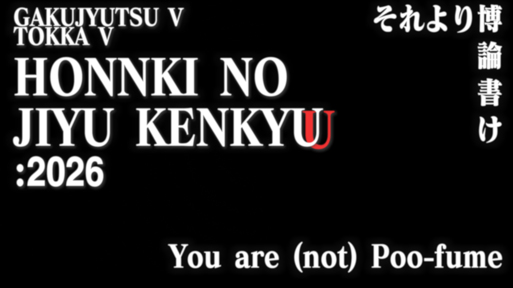
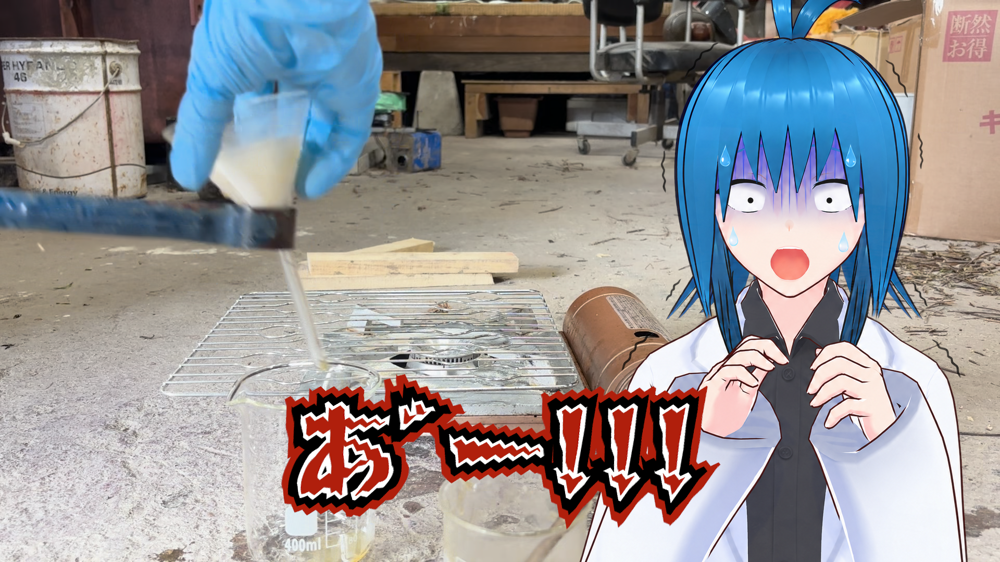
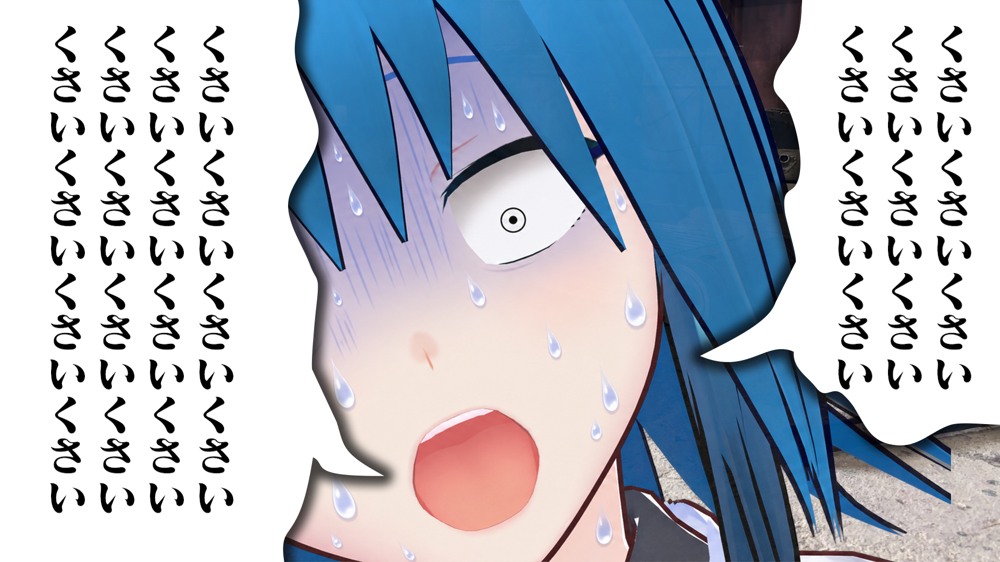
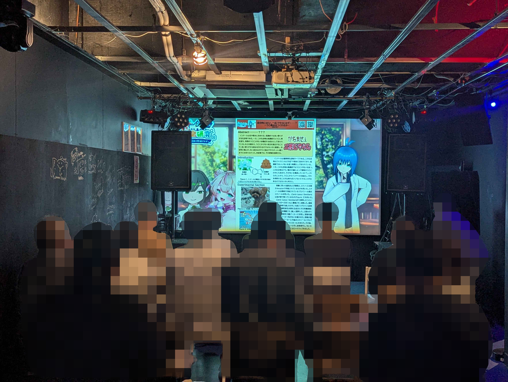
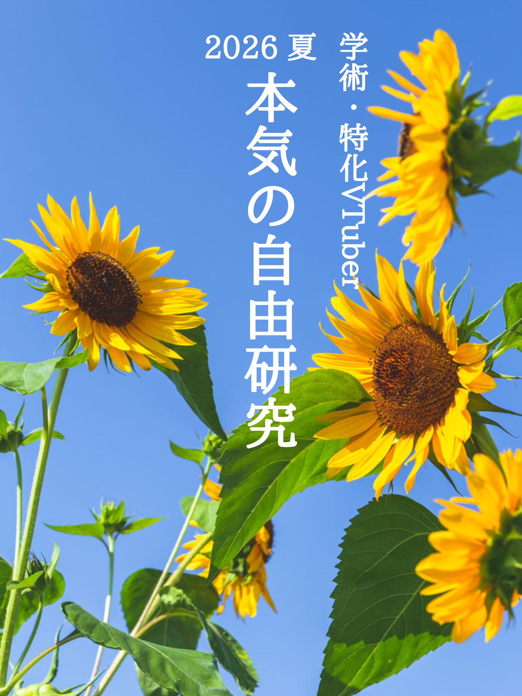
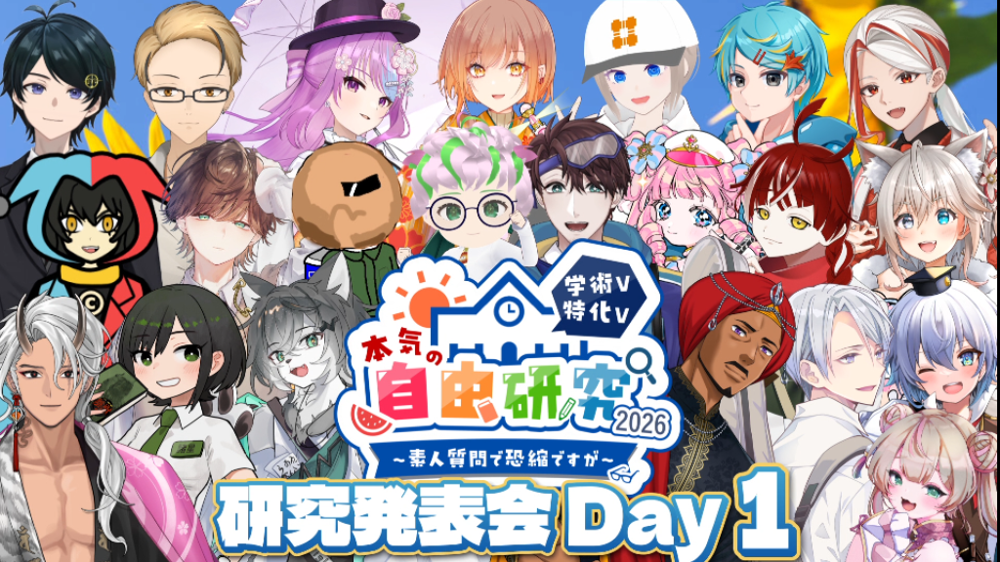
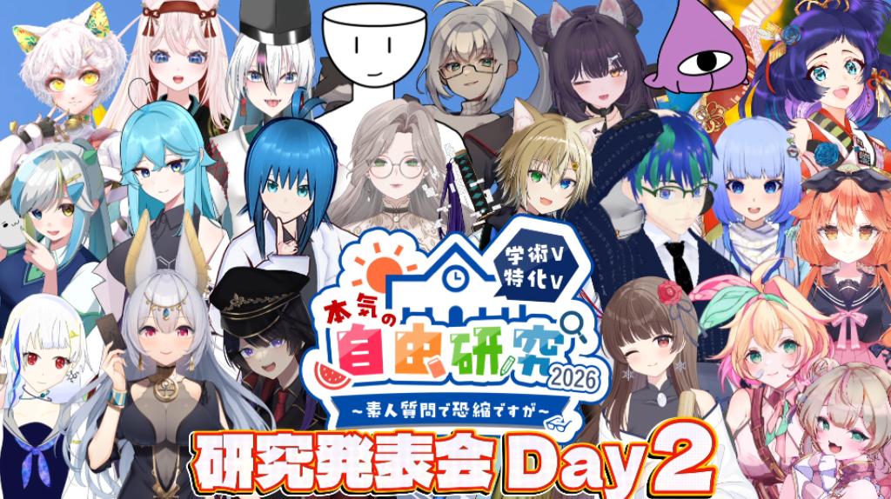

ガチで化学で博士号取得をめざしている錯体化学Vtuber。 少しでも科学的な話に興味を持ってもらえたらいいな！
専門は無機・錯体化学。化学以外にもゲーム（FPS）、動画作成、簡単な創作も好きです。
Vtuber of Coordination Chemistry/ Mad Chemist VT
錯体化学の話題を中心に発信中！博士号をめざしながら、少しでも科学的な話に興味を持ってもらえたらいいな、という気持ちで活動しています。
Selected Videos
Profile
ガチで化学で博士号取得をめざしている錯体化学Vtuber。 少しでも科学的な話に興味を持ってもらえたらいいな！
専門は無機・錯体化学。化学以外にもゲーム（FPS）、動画作成、簡単な創作も好きです。
難しいことを難しいまま避けないで！ちょっとだけでも覗いてみようと思えるようにしたい！VTuber活動を通して化学の世界の入口を見せていきたいな!!
Mad Chemist VT
髪色をはじめ、さわやかな感じで！（地毛です、異論はなし！！）
アイコンに描かれている原子番号28の元素。風谷個人的に一番愛している。
白衣と黒いシャツ。実験室ならデフォルトだよね？？
FPS、動画作成、簡単な創作。ゲーム用のサブチャンネルでも活動しています。
Works
Logs
博論執筆もひと段落、ということで遅くなりましたが本気の自由研究の企画内容を振り返りました！

本気の自由研究2026で行った自由研究の内容をまとめた動画を投稿しました。 自分でもなにやってんだろう俺、と思いながら編集しました。 是非ご覧ください！




学術・特化VTuber本気の自由研究2026のリアルイベントにて自由研究の内容を発表してきました！！ 企画全体が大盛況で終わり、なによりです！！ 主催のなぬのさんをはじめ、皆様に感謝申し上げます！ 詳細はイベントホームページをご確認ください！！！

ななななんと！！学術・特化VTuber本気の自由研究2026参加者の代表の一人としてのリアルイベントに登壇することになりました！！ 詳細はイベントホームページをご確認ください！！！

学術・特化VTuber本気の自由研究2026の成果報告配信にて自由研究の内容を発表してきました！！ 風谷の自由研究内容については…………果たしてどんなことをやったのか！ 是非配信をご覧ください！

学術・特化VTuber本気の自由研究2026の成果報告配信にて自由研究の内容を発表してきました！！ 風谷の自由研究内容については…………果たしてどんなことをやったのか！ 是非配信をご覧ください！


学術・特化VTuber本気の自由研究2026への参加および自由研究の内容を発表することになりました！！ 風谷の自由研究内容、ぜひお楽しみに！！
学術V本気の自由研究2025に関連する補足情報。必要に応じて更新されるメモとして公開されています。
noteで読む「いくつの分子の色を予測できる？？DFT計算RTA！！」として、DFT計算を扱う企画で参加。
掲載ページを見る夏休み科学Vtuber相談室で、夜に遠くの音が届きやすい理由について回答。
記事を読むLinks
YouTube概要欄、note、公開されている企画ページをもとに仮組みしています。 正式なプロフィール文や画像素材がある場合は、そこに合わせて調整できます。
Guidelines
風谷創太の配信を見に来てくれて、ありがとうございます！ みんなが同じ配信を楽しめるように、コメント欄でのお願いをまとめました。はじめての人も、まずはここだけ読んでもらえるとうれしいです。
ここは風谷の配信であり、これを楽しみにしてくれている多くの人たちに向けて行っています。 これらの人々をが楽しめくなるように、この空気を乱す人のは看過できません。 今後厳しく対応していくことが増えると思います。
最終更新：2026/11/15
ファンアートや二次創作はいただけるととてもうれしいです！ みんなが安心して作って楽しめるように次のことを守っていただくようお願いします！！
このガイドラインに沿っていないと判断したときは、削除や修正をお願いすることがあります。 内容は見直すことがあります。迷ったときは【問い合わせ先】までご相談ください。
最終更新：2026/11/15